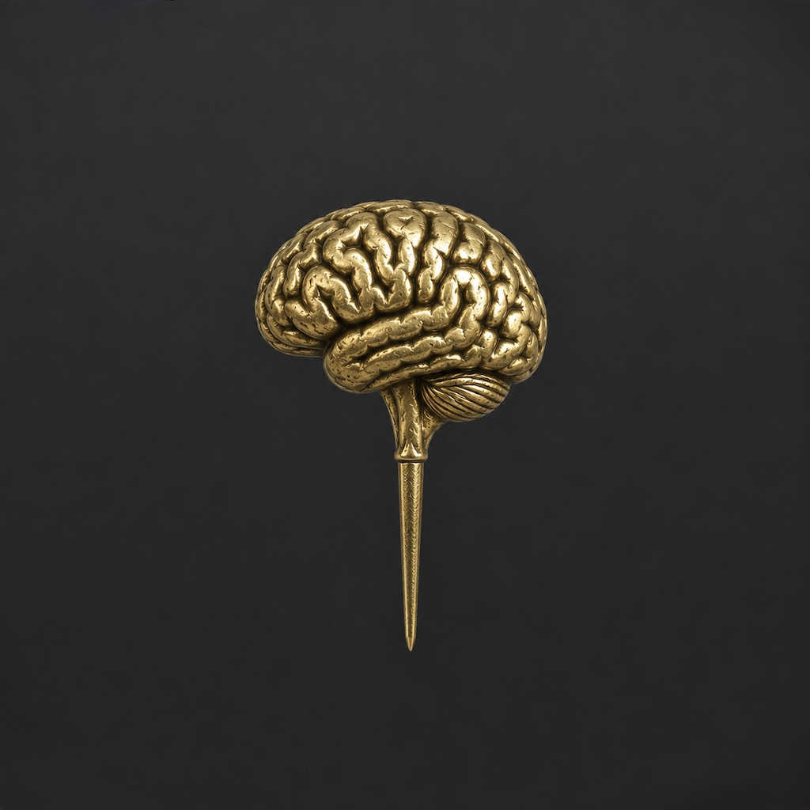

Brasstacks » User Guide
User Guide
Everything you need to know about using Brasstacks to support your focus and productivity. This guide walks through each feature and how to make it work for you.
1. The Right Now Screen
The Right Now screen is the heart of Brasstacks. Instead of showing you a long list of tasks, it shows you one thing — the single task that matters most at this moment.
Brasstacks picks this task using smart prioritization that considers:
- Urgency — Is there a deadline approaching?
- Importance — Does this move a meaningful goal forward?
- Your patterns — Over time, Brasstacks learns when you tend to do certain types of tasks best.
This is based on a modified Eisenhower matrix, enhanced with deadline awareness and learned behavior patterns.
Tip: Trust the system. If you find yourself wanting to switch to a different task, ask yourself whether you are genuinely reprioritizing or just avoiding the current one. Brasstacks is designed to help you stick with what matters.
Actions from the Right Now Screen
- Start — Begin working on the task with the focus timer.
- Break it down — Open the micro-steps view to decompose a big task.
- Skip — Move to the next task without guilt. Brasstacks will bring it back when the time is right.
- Done — Mark it complete and move on.
2. Task Capture
Adding tasks to Brasstacks is designed to be fast so you can capture the thought before it disappears.
When you capture a task, you can optionally set:
- Deadline — When does it need to be done?
- Importance — How much does it matter? (High, Medium, Low)
- Category — Work, personal, health, etc.
You do not need to fill in every field. Brasstacks will use sensible defaults and refine its understanding over time.
Tip: Capture tasks immediately when they come to mind. Do not try to organize them right away. The point of capture is speed — you can refine details later.
3. Micro-Steps
Big, vague tasks are the enemy of getting started. "Write the quarterly report" feels impossible. "Open the document and type one sentence" feels doable.
Micro-steps help you break any task into tiny, concrete actions. Each step should be:
- Small — Completable in 2-5 minutes.
- Specific — You know exactly what "done" looks like.
- Sequential — Each one leads naturally to the next.
Brasstacks can suggest micro-steps for you, or you can create your own. As you complete each step, the next one appears automatically.
4. Focus Timer
The focus timer helps you commit to working on a task for a defined period. It is not a Pomodoro timer (though you can use it that way). It is flexible:
- Set any duration that works for you.
- Pause and resume as needed.
- Get a gentle alert when the timer ends — no jarring alarms.
The timer tracks your focus sessions so you can see patterns over time. Some people work in 10-minute bursts. Some can go for an hour. There is no wrong answer.
Tip: If you are struggling to start, set the timer for just 5 minutes. You will often find that once you begin, you want to keep going.
5. Focus Companion
Having another person present (even virtually) while you work can dramatically improve focus and motivation — it's a well-known focus strategy.
Brasstacks provides a virtual focus companion that:
- Offers a sense of gentle presence and accountability.
- Provides periodic check-ins to keep you on track.
- Celebrates your progress without being over the top.
- Does not judge you if you get distracted.
Focus companion works alongside the focus timer. Enable it when you need that extra sense of "someone is here with me."
6. Rescue Mode
Sometimes everything feels like too much. You are frozen, overwhelmed, or spiraling. Rescue mode is designed for exactly these moments.
When you activate rescue mode, Brasstacks will:
- Pause everything — no tasks, no timers, no pressure.
- Guide you through a brief grounding exercise (optional).
- Help you identify one tiny thing you can do right now.
- Gently transition you back to your task when you are ready.
There is no shame in using rescue mode. It is there because getting stuck is a normal part of the experience, and having a way out matters.
Tip: Set up rescue mode before you need it. When you are calm, explore the options so they feel familiar when you are overwhelmed.
7. Goals
Goals give your tasks a bigger context. They answer the question: "Why am I doing this?"
In Brasstacks, goals are:
- Simple — A short statement of what you want to achieve.
- Trackable — Linked to tasks that move you toward them.
- Flexible — Adjust them as your priorities change.
When Brasstacks prioritizes your tasks, it factors in which goals they support. Tasks tied to important goals get a natural boost in priority.
You do not need to set goals to use Brasstacks. They are there when you want that extra layer of direction.
8. AI Assistant
Brasstacks includes an optional AI assistant that knows your tasks, goals, and progress. You can ask it things like:
- "What tasks do I have?"
- "What did I finish this week?"
- "What should I focus on right now?"
- "How does rescue mode work?"
The assistant can also break down tasks into micro-steps for you automatically.
Bring Your Own Key
Brasstacks does not include its own AI — instead, you connect your own account from one of three providers. This means you control the costs and can choose the provider you trust most.
Supported providers:
- Claude (Anthropic) — Model: Claude Haiku
- OpenAI — Model: GPT-4o mini
- Google Gemini — Model: Gemini 2.0 Flash
All three use lightweight, affordable models. Typical usage costs pennies per month.
How to Get an API Key
Each provider has a simple sign-up process. You will need a free account and a payment method on file (you are only charged for what you use).
Claude
Go to console.anthropic.com → API Keys → Create Key. Copy the key.
OpenAI
Go to platform.openai.com → API Keys → Create new secret key. Copy the key.
Gemini
Go to aistudio.google.com → Get API Key → Create API key. Copy the key.
Setup in the App
- Open Settings
- Scroll to AI Features
- Toggle Enable AI on
- Select your provider (Claude, OpenAI, or Gemini)
- Paste your API key and tap Save Key
Once set up, the Ask tab at the bottom of the app will connect you to your assistant.
Security & Privacy
Your API key is encrypted using your password before it is stored. The encryption key is derived from your login credentials, which means:
- Your key is stored as encrypted data on our server — not in plain text.
- Only your login can decrypt it. Even we cannot read your API key.
- Before your task data is sent to the AI provider, personal details (emails, phone numbers, URLs, dates, and money amounts) are automatically anonymized.
What happens if I forget my password? Because your API key is encrypted with your password, a password reset means the encrypted key can no longer be decrypted. You will simply need to re-enter your API key in Settings after resetting your password. Your tasks, goals, and all other data are unaffected.
Usage Limits
To keep costs predictable, Brasstacks limits AI usage to 10 messages per hour and 50 per day. This is more than enough for typical use.
9. Settings
Brasstacks adapts to your preferences. Here are the key settings you can configure:
Nudge Frequency
Frequency
How often Brasstacks reminds you about your current task. Options range from every 5 minutes to once an hour, or off entirely.
Style
Notification style: gentle buzz, subtle banner, or full notification. Choose what works without being annoying.
Quiet Hours
Start / End Time
Set a window where Brasstacks will not send any nudges. Use this for sleep, meals, or any time you need to be off.
Override
Allow critical deadline reminders to come through even during quiet hours, if you choose.
Tone
Cheerful
"Hey, you have got this! Ready to come back to your task?"
Calm
"Whenever you are ready, your task is here."
Direct
"Time to refocus. Your current task: [task name]."
Tip: Your ideal settings may change throughout the day. Some people prefer direct nudges in the morning and calm ones in the afternoon. Experiment and adjust.